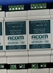

안녕하세요, ACOMM에 오신것을 환영합니다.
ACOMM은 좋은 제품을 공급하여 기업과의 상생을 추구합니다.
Niagara Framework과 쉽게 연결할 수 있도록 기술을 지원해드립니다.
HMI, DDC, PLC와의 인터페이스를 쉽게 하실 수 있습니다.
합리적인 가격과 퍼포먼스로 만족시켜 드리겠습니다.
카다로그
다양한 제품 및 정보 카다로그를 확인하실 수 있습니다. 원하는 카다로그를 선택하여 상세 내용을 열람하거나 다운로드하세요.
| 제품명 | 설명 | 다운로드 | |
|---|---|---|---|
|  MDBGW-1SE | MDBGW 시리즈의 가장 기본적인 모델로, 안정적인 데이터 통신 환경을 제공합니다. | 다운로드 | |
| MDBGW-1SPE | MDBGW-1SE 모델에 보안 강화 기능이 추가된 프리미엄 제품입니다. | 다운로드 | |
| MDBGW-2SE | 두 개의 독립적인 채널을 지원하여 확장성이 뛰어난 표준 모델입니다. | 다운로드 | |
| MDBGW-2SPE | MDBGW-2SE 모델의 보안 강화 버전으로, 이중 채널 환경에서 최고의 안정성을 제공합니다. | 다운로드 | |
| MDBGW-4SE | 네 개의 채널을 동시에 운영할 수 있어 대규모 시스템에 적합한 표준 모델입니다. | 다운로드 | |
| MDBGW-4SPE | MDBGW-4SE 모델에 고급 보안 및 관리 기능이 추가된 프리미엄 모델입니다. | 다운로드 | |
| MDBGW-8SE | 최대 여덟 개의 채널을 지원하여 산업용 애플리케이션에 최적화된 표준 모델입니다. | 다운로드 | |
| MDBGW-8SPE | MDBGW 시리즈 중 가장 강력한 성능과 최고 수준의 보안을 제공하는 최상위 모델입니다. | 다운로드 | |
엔지니어링
최신 기술과 전문 지식을 활용한 엔지니어링 솔루션을 제공합니다.
각 분야별 GW 시리즈에 대한 상세 정보를 확인해보세요.
문의하기
궁금한 점이나 협력 문의가 있으시면 언제든지 연락 주세요.
mail : acommsales1024@gmail.com
phone : 010-7383-3070 (문자전용)